Si una lámina ocupa una región \(\mathcal{D}\) en el plano-\(xy\) y para el punto \((x,y)\) su densidad está dada por la función \(\rho(x,y)\) (en unidades de masa por unidad de área), se define su masa total como \[ m=\int_{\mathcal{D}}\rho(x,y)dA \] (siempre que la integral exista).
Los momentos de masa con respecto a los ejes \(x\) e \(y\) se definen como \begin{eqnarray*} M_x=\int_{\mathcal{D}} y\rho(x,y)dA\\ M_y=\int_{\mathcal{D}} x\rho(x,y)dA \end{eqnarray*} Nota: el momento con respecto al eje \(x\) tiene un integrando de la forma \(y\rho(x,y)\) pues la idea es que estamos multiplicando la densidad en un punto \((x,y)\) por su distancia al eje \(x\).
El centro de masa de la lámina \(\mathcal{D}\) se define como el punto \((\overline{x},\overline{y})\) donde \[ \overline{x}=\frac{1}{m}\int_{\mathcal{D}}x\rho(x,y)dA, \quad \overline{y}=\frac{1}{m}\int_{\mathcal{D}}y\rho(x,y)dA \]
Encuentra el centro de masa de una lámina triangular cuyos vértices están en los puntos \((0,0),(0,a)\) y \((a/3,2a)\), donde \(a>0\) es una constante y donde suponemos una densidad constante.
Como en éste caso la densidad es constante las coordenadas del centro de masa se simplifican a \begin{eqnarray*} \overline{x}&=&\frac{1}{\rho\text{Area}(S)}\int_{S} x \rho dA=\frac{1}{\text{Area}(S)}\int_S xdA\\ \overline{y}&=&\frac{1}{\rho\text{Area}(S)}\int_{S} y \rho dA=\frac{1}{\text{Area}(S)}\int_S ydA \end{eqnarray*}
Primero tenemos que definir la región de integración. Dibujando el triángulo tenemos
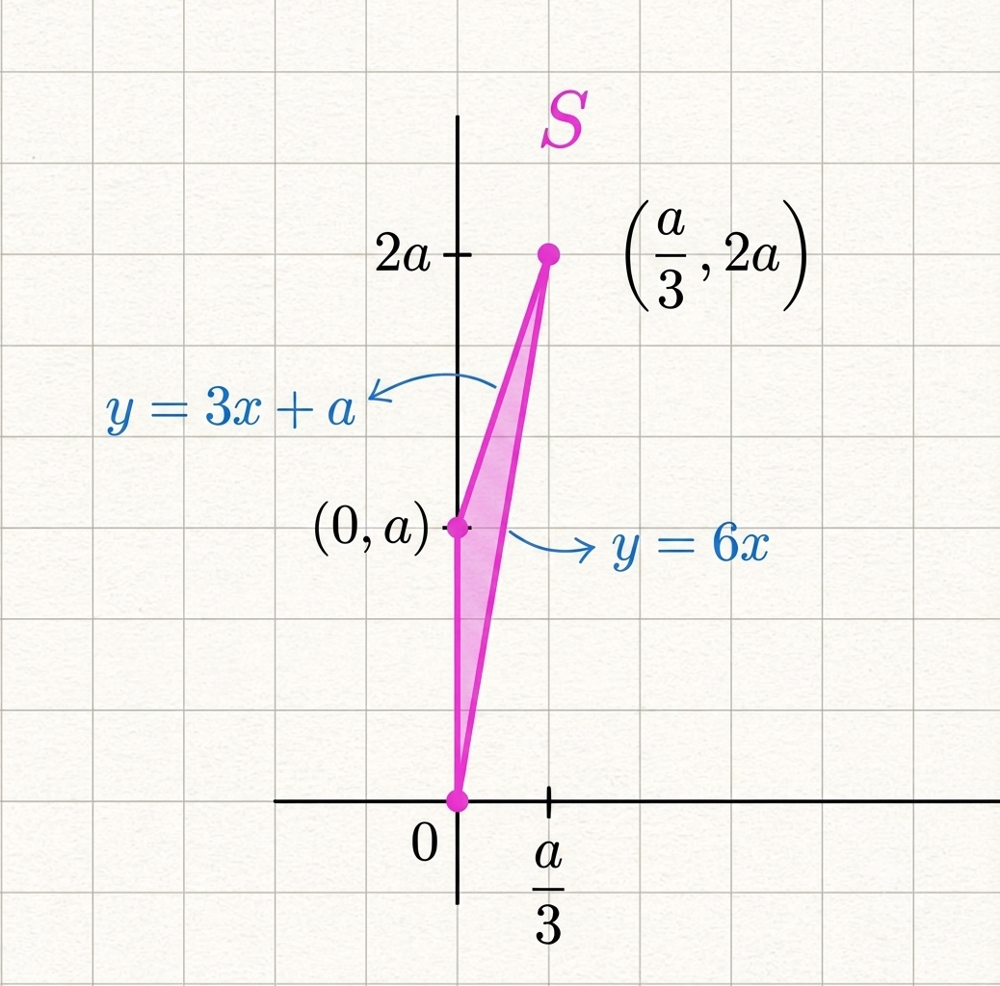
Por la fórmula del área de un triángulo tenemos \[ \text{Area}(S)=\frac{1}{2} a \frac{a}{3}=\frac{1}{6}a^2 \]
Las rectas que buscamos son: \(y=6x\), \(y=3x+a\).
Por otro lado, viendo a \(S\) como una región de tipo I, con piso \(g_1(x)=6x\) y techo \(g_2(x)=3x+a\), tenemos \begin{eqnarray*} \int_S xdA &=& \int_0^{a/3}\int_{6x}^{3x+a} x dy dx \\ &=& \int_0^{a/3}x\left( 3x+a-6x\right)dx \\ &=& \int_0^{a/3}x(a-3x) dx \\ &=& \left( \int_{0}^{a/3} axdx - \int_{0}^{a/3}3x^2 dx \right) \\ &=& \left( \frac{1}{18}a^3 - \frac{1}{27}a^3\right)\\ &=& \frac{1}{54}a^3 \\ \end{eqnarray*} entonces \[ \overline{x}=\frac{1}{\text{Area}(S)} \frac{1}{54}a^3=\frac{6}{a^2}\frac{1}{54}a^3=\frac{1}{9}a \]
Similarmente, \begin{eqnarray*} \int_S y dA &=& \int_0^{a/3}\int_{6x}^{3x+a} y dy dx \\ &=& \int_0^{a/3} \frac{ (3x+a)^2- (6x)^2}{2} dx \\ &=& \frac{1}{2} \int_{0}^{a/3} (a^2 + 6ax - 27x^2) dx \\ &=&\frac{1}{2} \left[ a^2x + 3ax^2 - 9x^3 \right]_{0}^{a/3} \\ &=&\frac{1}{2} \left( a^2\left(\frac{a}{3}\right) + 3a\left(\frac{a^2}{9}\right) - 9\left(\frac{a^3}{27}\right) \right) \\ &=& \frac{1}{2} \left( \frac{a^3}{3} + \frac{a^3}{3} - \frac{a^3}{3} \right) \\ &=& \frac{1}{6} a^3\\ \end{eqnarray*} entonces \[ \overline{y}=\frac{1}{\text{Area}(S)}\frac{1}{6}a^3=\frac{6}{a^2}\frac{1}{6}a^3=a. \]
Por lo tanto el centro de masa es \[ \left( \frac{1}{9}a, a \right) \]
Consideramos las coordenadas polares \[ \mathbb{r}(r,\theta)=(r\cos(\theta), r\sen(\theta)) \] Tomemos el rectángulo \(\mathcal{R}=[a,b]\times [\theta_1,\theta_2]\), con \( 0< a< b \), \(0\leq \theta_1 < \theta_2 < 2\pi\) y tomemos \(\mathcal{S}=\mathbb{r}(\mathcal{R})\).
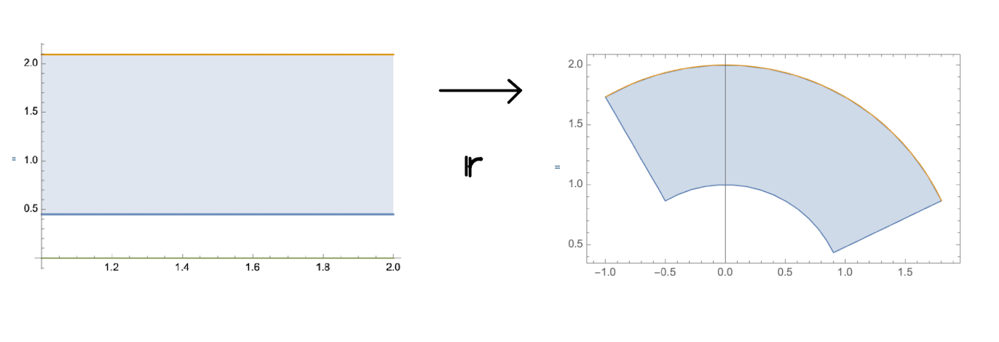
Supongamos que \(f\) es una función continua en \(\mathcal{S}\). Entonces \[ \int_{\mathcal{S}}f(x,y)dA= \int_{a}^b \int_{\theta_1}^{\theta_2}f(r\cos(\theta),r\sen(\theta))r d\theta dr \]
Una lámina tiene la forma de la intersección de las circunferencias \(x^2+y^2=1, x^2+y^2=2y\). Calcula su centro de masa si la densidad de un punto es proporcional al inverso de la distancia del punto al origen.
La primera circunferencia es de radio 1, centrada en el origen. La segunda circunferencia se puede reescribir como: \(x^2+y^2=2y\Rightarrow x^2+(y-1)^2=1\), una circunferencia de radio 1 centrada en \((0,1)\).
Ahora intersectamos las curvas para ver la región de integración. Sustituyendo \(2y=x^2+y^2\) en \(x^2+y^2=1\) obtenemos \(y=\frac{1}{2}\) y sustituyendo ésta en \(x^2+y^2=1\) obtenemos \(x=\pm\frac{\sqrt{3}}{2}\). Entonces la región de integración es
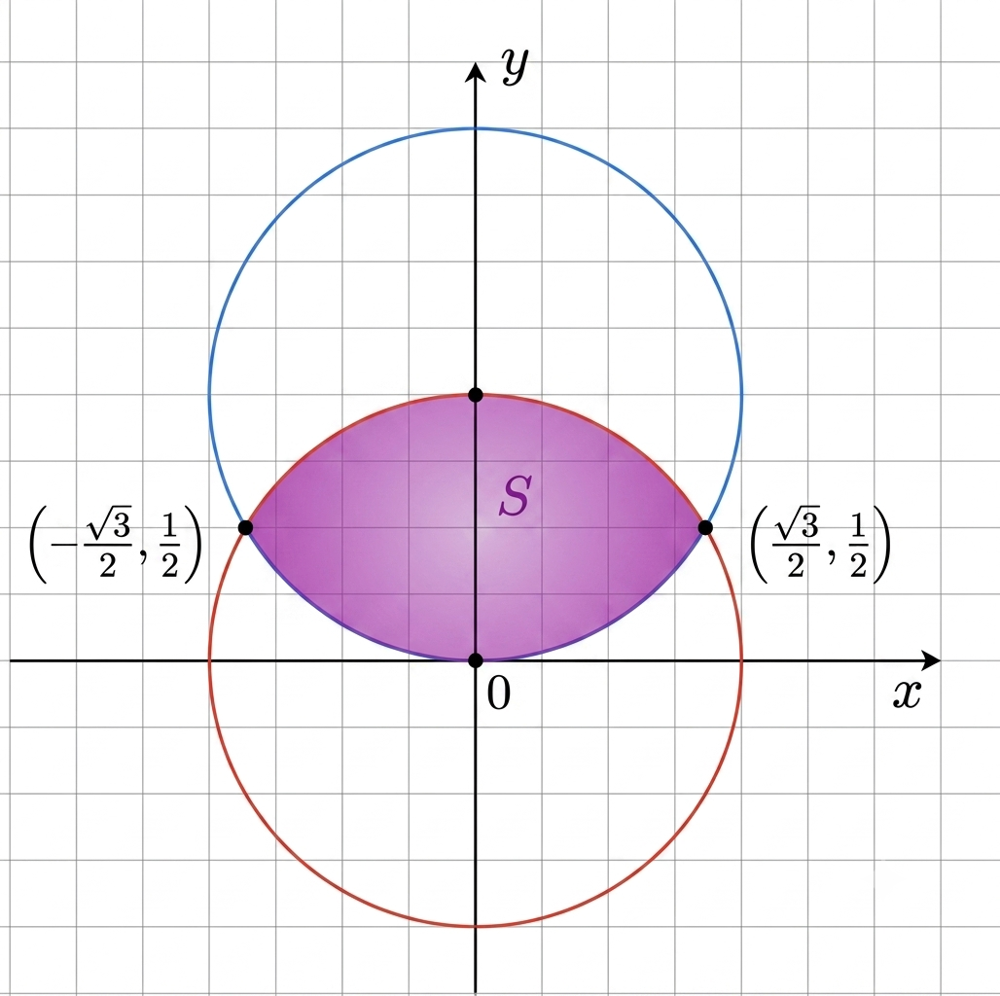
Por otro lado, como la densidad es inversamente proporcional a la distancia al origen tiene que tener la forma \[ \rho(x,y)=\frac{k}{\sqrt{x^2+y^2}} \] para alguna constante \(k>0\).
Masa total.
Así la masa total está dada por \(m=\int_{S} \rho(x,y)dA\), la cual vamos a calcular partiendo la región \(S\) en tres partes
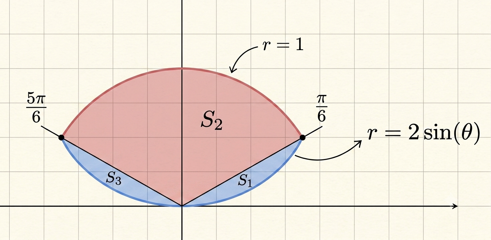
Por el Teorema de cambio de variable \begin{eqnarray*} \int_{S_1}\rho(x,y)dA&=&\int_{0}^{\pi/6}\int_0^{2\sen(\theta)} \frac{k}{r} r dr d\theta \\ &=& k \int_0^{\pi/6} 2\sen(\theta)d\theta \\ &=& 2k [-\cos(\theta)]_{0}^{\pi/6} \\ &=& 2k\left(1-\frac{\sqrt{3}}{2}\right) \end{eqnarray*}
Por la simetría de la función densidad \(\rho(x,y)\) con respecto al eje \(y\) podemos concluir que \[ \int_{S_2}\rho(x,y)dA=2k\left(1-\frac{\sqrt{3}}{2}\right) \]
Para \(S_3\) tenemos por el Teorema de cambio de variable \begin{eqnarray*} \int_{S_3}\rho(x,y)dA&=&\int_{\pi/6}^{5\pi/5} \int_{0}^1 \frac{k}{r}rdrd\theta \\ &=& k k\int_{\pi/6}^{5\pi/6}1 d\theta \\ &=& k\frac{2\pi}{3} \end{eqnarray*}
Por lo tanto \begin{eqnarray*} m&=&4k\left(1-\frac{\sqrt{3}}{2}\right)+k\frac{2\pi}{3} \\ &=&k\left( 4-2\sqrt{3}+\frac{2\pi}{3}\right) \end{eqnarray*}
Coordenada \(\overline{x}\).
Ya que \(\rho(x,y)=\rho(-x,y)\), la densidad es simétrica con respecto al eje \(y\) y como la región \(S\) también es simétrica con respecto al eje \(y\) concluimos que \(\overline{x}=0\).
Coordenada \(\overline{y}\).
Igualmente partimos la integral que define a \(\overline{y}\) en tres partes \[ \int_{S} y\rho(x,y)dA=\int_{S_1} y\rho(x,y)dA+\int_{S_2} y\rho(x,y)dA+\int_{S_3} y\rho(x,y)dA \] y por simetria de \(S_1\) y \(S_3\) con respecto al eje \(y\) y junto con la identidad \(y\rho(x,y)=y\rho(-x,y)\) podemos simplificar \[ \int_{S} y\rho(x,y)dA=2\int_{S_1} y\rho(x,y)dA+\int_{S_2} y\rho(x,y)dA \] Ahora calculamos las integrales usando el Teorema del cambio de variable.
Para \(S_1\): \begin{eqnarray*} \int_{S_1}y\rho(x,y)dA&=&\int_{0}^{\pi/6} \int_{0}^{2\sen(\theta)} r\sen(\theta) \frac{k}{r}rdrd\theta \\ &=& k\int_0^{\pi/6} \int_{0}^{2\sen(\theta)} r\sen(\theta)drd\theta \\ &=& k \int_0^{\pi/6}\left( \sen(\theta) \int_{0}^{2\sen(\theta)} rdr \right)d\theta \\ &=& k \int_0^{\pi/6} \sen(\theta) \frac{\sen^2(\theta)}{2} d\theta \\ &=& \frac{k}{2} \int_0^{\pi/6}\sen^3(\theta)d\theta \\ &=& \frac{k}{2}\left( \frac{2}{3}-\frac{3\sqrt{3}}{8}\right) \end{eqnarray*}
Para \(S_2\): \begin{eqnarray*} \int_{S_2}y\rho(x,y)dA&=&\int_{\pi/6}^{5\pi/6}\int_0^1 r\sen(\theta)\frac{k}{r}rdr d\theta \\ &=& k \int_{pi/6}^{5\pi/6} \sen(\theta)\left( \int_0^1 r dr \ \right) d\theta \\ &=& k \int_{\pi/6}^{5\pi/6} \sen(\theta)\frac{1}{2} d\theta \\\ &=& \frac{k}{2}[-\cos(\theta)]_{\pi/6}^{5\pi/6} \\ &=& \frac{k}{2}\sqrt{3} \end{eqnarray*}
Finalmente \begin{eqnarray*} \overline{y}&=&\frac{1}{m}\int_S y\rho(x,y)dA \\ &=&\frac{1}{m} \left(k\left( \frac{2}{3}-\frac{3\sqrt{3}}{8}\right) + \frac{k}{2}\sqrt{3} \right)\\ &=&\frac{k}{m}\left( \frac{2}{3}-\frac{3\sqrt{3}}{8} + \frac{\sqrt{3}}{2} \right) \\ &=& \frac{k}{m} \left( \frac{2}{3}+\frac{\sqrt{3}}{8} \right) \\ \end{eqnarray*}
Concluimos \[ (\overline{x},\overline{y})=\left(0, \frac{\frac{2}{3}+\frac{\sqrt{3}}{8}}{4-2\sqrt{3}+\frac{2\pi}{3}} \right) \]
Una variable aleatoria es una función que trata de modelar las posibilidades de un evento (que una maquina falle, que el precio de una acción suba/baje). Lo importante de las variables aleatorias es que queremos calcular probabilidades de eventos. Si \(X\) es una variable aleatoria que toma valores reales queremos calcular probabilidades de eventos como \(a\leq X \leq b\), lo cual se denota \[ \mathbb{P}(a\leq X \leq b) \] Nota: la probabilidad siempre es un número en \([0,1]\) donde la idea es que un evento con probabilidad cerca de \(0\) es poco probable y uno cerca de 1 es más probable.
Una variable aleatoria \(X\), que toma valores reales, se dice que tiene función de densidad de probabilidad si existe una función \(f\) que satisface
Algunos ejemplos importantes de funciones de densidad (también llamadas distribuciones son) son
Los siguientes lemas tratan la distribución Gaussiana y a exponencial está en los ejercicioss.
Para \(s>0\) denota \[ A(s)=\int_{-s}^s e^{-u^2}du \]
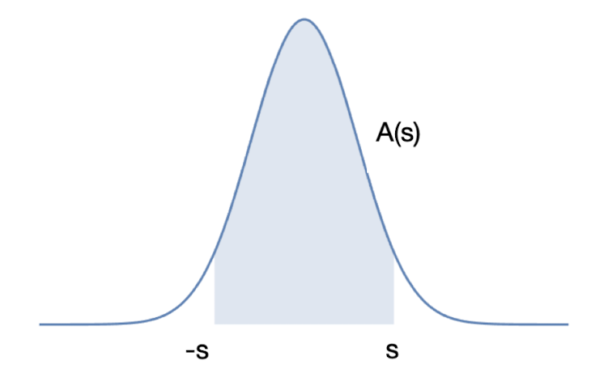
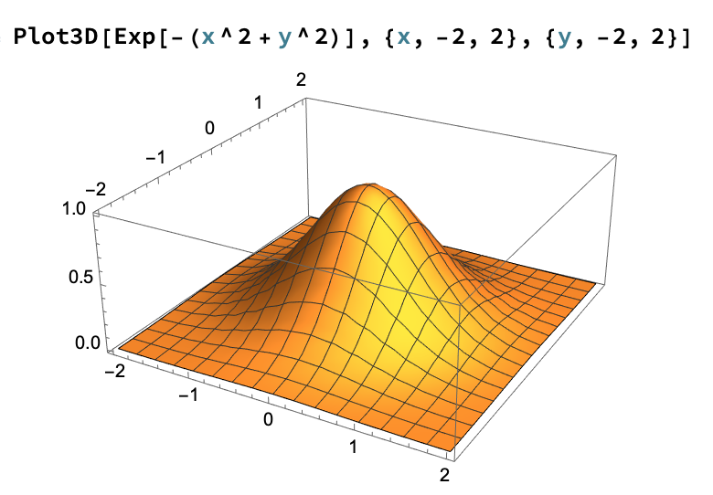
Aplicando directamente el Teorema de Fubini resulta \[ \int_{\mathcal{R}}e^{-(x^2+y^2)}dA = \int_{-s}^{s}\left( \int_{-s}^s e^{-(x^2+y^2)}dx\right)dy \] y por las propiedades de la exponencial \(e^{-(x^2+y^2)}=e^{-x^2}e^{-y^2}\), así que haciendo las integrales interadas obtenemos \begin{eqnarray*} \int_{-s}^{s}\left( \int_{-s}^s e^{-(x^2+y^2)}dx\right)dy&=& \int_{-s}^s \left( \int_{-s}^se^{-x^2}e^{-y^2} dx\right)dy \\ &=& \int_{-s}^s \left( e^{-y^2}\int_{-s}^se^{-x^2} dx\right)dy \\ &=& \int_{-s}^s e^{-y^2}A(s)dy \end{eqnarray*} donde en la última identidad usamos la definición de \(A(s)\). Notamos que \(A(s)\) es constante con respecto a \(y\) por lo tanto podemos sacarla de la última integral y usando de nuevo la definición de \(A(s)\) obtenemos \begin{eqnarray*} \int_{-s}^{s}\left( \int_{-s}^s e^{-(x^2+y^2)}dx\right)dy&=&A(s)\int_{-s}^{s}e^{-y^2}dy \\ &=& A(s)^2 \end{eqnarray*}
Definamos las funciones \(f,g,h: C_2 \to \mathbb{R}\) por \begin{eqnarray*} f(x,y)&=&\left\{ \begin{array}{cc} e^{-(x^2+y^2)} & (x,y)\in C_1 \\ 0 & \textrm{otro caso } \end{array} \right. \\ g(x,y)&=&\left\{ \begin{array}{cc} e^{-(x^2+y^2)} & (x,y)\in \mathcal{R} \\ 0 & \textrm{otro caso } \end{array} \right. \\ h(x,y)&=&e^{-(x^2+y^2)} \end{eqnarray*} Entonces se tiene que \(f \leq g \leq h\) y por Monotonía de la integral \[ \int_{C_2} f \leq \int_{C_2} g \leq \int_{C_2} h \] de lo cual se sigue que \[ \int_{C_1}e^{-(x^2+y^2)} \leq \int_{\mathcal{R}} e^{-(x^2+y^2)} \leq \int_{C_2}e^{-(x^2+y^2)} \] y por el inciso anterior concluimos \[ \int_{C_1}e^{-(x^2+y^2)} \leq A(s)^2 \leq \int_{C_2}e^{-(x^2+y^2)} \]
Primero notamos que el radio de \(C_1\) es \(s\) y el radio de \(C_2\) es \(\sqrt{2}s\). Ahora, usando el Teorema de cambio de variable en coordenadas polares llegamos a \begin{eqnarray*} \int_{C_1}e^{-(x^2+y^2)}&=& \int_{0}^{2\pi}\int_{0}^{s} e^{-r^2}r drd\theta \\ &=& \left( \int_{0}^{2\pi} 1 d\theta \right)\left( \int_{0}^s e^{-r^2}rdr\right) \\ &=& 2\pi \int_{0}^{s}e^{-r^2}rdr \\ &=& \pi\int_0^{s^2} e^{-u}du \end{eqnarray*} donde en la última identidad usamos el cambio de variable \(u=r^2\). Calculando la última integral obtenemos \(\int_0^{s^2} e^{-u}du= -e^{-s^2}+e^0=1-e^{-s^2}\) y por lo tanto \[ \int_{C_1}e^{-(x^2+y^2)}=\pi(1-e^{-s^2}) \] De manera similar \[ \int_{C_2}e^{-(x^2+y^2)}=\pi(1-e^{-(\sqrt{2}s)^2}) \] Finalmente del inciso anterior \[ \pi(1-e^{-s^2}) \leq A(s)^2 \leq \pi(1-e^{-(\sqrt{2}s)^2}) \] por lo que al tomar límite cuando \(s\to \infty\) y usar la ley del sandwich concluimos \[ \lim_{s\to \infty}A(s)^2=\pi \Rightarrow \lim_{s\to \infty} A(s)=\sqrt{\pi} \]
Usa un cambio de variable y el ejercicio anterior para probar que para \(\mu,\sigma\) constantes: \[ \frac{1}{\sigma\sqrt{2\pi}}\int_{-\infty}^{\infty} e^{-(t-\mu)^2/(2\sigma^2)}dt=1 \]
Para \(s >0\) consideramos la integral \[ \int_{-s}^s e^{-(t-\mu)^2/(2\sigma^2)}dt \] y el cambio de variable \(u=(t-\mu)/(\sqrt{2}\sigma)\) para obtener \[ \int_{-s}^s e^{-(t-\mu)^2/(2\sigma^2)}dt= \sqrt{2}\sigma \int_{-(s-\mu)/(\sqrt{2}\sigma)}^{(s-\mu)/(\sqrt{2}\sigma)}e^{-u^2}du \] tomando límite cuando \(s\to \infty\) y usando el ejercicio anterior llegamos a \begin{eqnarray*} \lim_{s\to \infty}\int_{-s}^s e^{-(t-\mu)^2/(2\sigma^2)}dt&=&\sqrt{2}\sigma \lim_{s\to \infty} \int_{-(s-\mu)/(\sqrt{2}\sigma)}^{(s-\mu)/(\sqrt{2}\sigma)}e^{-u^2}du \\ &=& \sqrt{2}\sigma \sqrt{\pi}\\ \Rightarrow \frac{1}{\sigma \sqrt{2\pi}}\int_{-\infty}^{\infty} e^{-(t-\mu)^2/(2\sigma^2)} &=&1 \end{eqnarray*}
La distribución o función de densidad Gaussiana de media \(\mu\) y varianza \(\sigma^2\) se define como \[ f(t)=\frac{1}{\sigma\sqrt{2\pi}} e^{-(t-\mu)^2/(2\sigma^2)} \]
Geométricamente, la media \(\mu\) dice dónde está la recta de simetría de la gráfica. La raíz de la varianza, \(\sigma\), llamda la desviación estandard dice qué tanto se dispersan los datos que se están modelando y si es es grande la campana es ancha y si es chica la campana es puntiaguda.
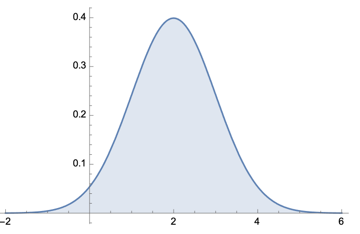
Cuando se tienen dos variables aleatorias \(X,Y\), su función de densidad de probabilidad conjunta es una función \(f:\mathbb{R}^2 \to \mathbb{R}\) que satisface:
Dos variables aleatorias, \(X,Y\), se llaman independientes si \[ \mathbb{P}( a\leq X \leq b \quad \textrm{y} \quad c \leq Y \leq d)= \mathbb{P}(a \leq X\leq b)\mathbb{P}(c \leq Y\leq d) \] para todos \(a< b, c< d\).
Si las variables aleatorias \(X\) y \(Y\) tienen funciones de densidad de probabilidad \(f_X, f_Y\) respectivamente y si son independientes se puede probar que su función de densidad conjunta, \(f(x,y)\), es \[ f(x,y)=f_X(x)f_Y(y) \] Es decir, para toda región \(\mathcal{D}\subseteq \mathbb{R}^2\): \[ \mathbb{P}((X,Y)\in \mathcal{D})=\int_{\mathcal{D}}f_X(x)f_Y(y)dA. \]
Ejemplos.
Supongamos que \(X, Y\) son variables aleatorias independiente, con densidades \(f_X,f_Y\).
Denotemos \begin{eqnarray*} p_x=\mathbb{P}(a\leq X \leq b)=\int_{a}^b f_X(x)dx\\ p_y=\mathbb{P}(c\leq Y \leq d)=\int_{c}^d f_y(y)dy\ \end{eqnarray*}
Entonces \begin{eqnarray*} 1-p_x=\mathbb{P}(X < a \, \text{ó} \, X> b )= \int_{-\infty}^a f_X(x)dx +\int_b^\infty f_X(x)dx\\ 1-p_y=\mathbb{P}(Y < a \, \text{ó} \, Y> b )= \int_{-\infty}^c f_Y(y)dy +\int_d^\infty f_Y(y)dy \end{eqnarray*}
Escrbiendo \begin{eqnarray*} ([a,b]\times \mathbb{R} )\cup (\mathbb{R}\times [c,d])&=& [a,b]\times [c,d] \\ &\cup & (-\infty,a)\times [c,d] \\ &\cup & (b,\infty)\times [c,d] \\ & \cup & [a,b]\times (-\infty, c) \\ & \cup & [a,b]\times (d, \infty) \end{eqnarray*} obtenemos \begin{eqnarray*} \mathbb{P}(a\leq X \leq b \, \text{ó}\, c\leq Y \leq d)&=&\int_{([a,b]\times \mathbb{R}) \cup (\mathbb{R}\times [c,d] )} f_X(x)f_Y(y)dA \\ &=& p_xp_y+p_y(1-p_x)+p_x(1-p_y) \\ &=& p_x+p_y-p_xp_y. \end{eqnarray*}
Decimos que un subconjunto \(\mathcal{S} \subset \mathbb{R}^n\) es una superficie suave parametrizada, si existe una función clase \(C^1\), \(\mathbb{r}: \mathcal{R} \to \mathbb{R}^n\) tal que
A veces se da directamente la función \(\mathbb{r}\) y decimos que un superficie parametrizada suave es una función clase \(C^1\), \(\mathbb{r}: \mathcal{R} \to \mathbb{R}^n\) que satisface las condiciones anteriores.
Ejemplos.
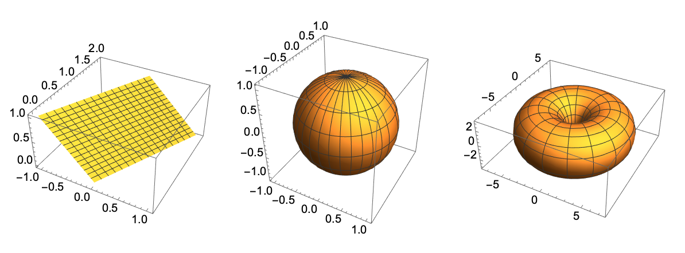
No ejemplos.
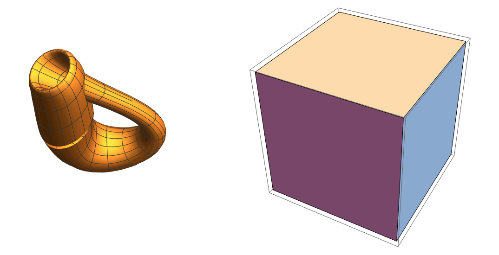
Notas:
Ejemplo.
Para el caso de la esfera \(\mathcal{S}=\{(x,y,z): x^2+y^2+z^2=r^2\}\), las coordenadas esféricas proveen la parametrización: \begin{eqnarray*} & & \mathbb{r}:[0,\pi]\times [0,2\pi]\to \mathbb{R}^3,\\ & & \mathbb{r}(\theta,\varphi)=(r\cos(\varphi)\sin(\theta), r\sin(\varphi)\sin(\theta), r\cos(\theta)). \end{eqnarray*}
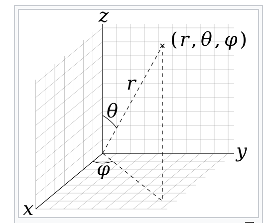
Es claro \(\mathcal{S}\) no se corta asi misma, que \(\mathbb{r}\) es clase \(C^1\) y utilizando coordenadas esféricas se tiene que \(\mathbb{r}([0,\pi]\times [0,2\pi])=\mathcal{S}\). Además el claro que todo punto tiene un plano tangente. Con respecto a éste último punto veamos otra manera de probarlo, lo cual se generaliza a otros ejemplos de superficies.
Las parciales de \(\mathbb{r}\) en un punto cualquiera \((\theta,\varphi)\) son \begin{eqnarray*} \partial_\theta \mathbb{r} (\theta,\varphi)= (r\cos(\varphi)\cos(\theta), r\sin(\varphi)\cos(\theta), -r\sen(\theta)) \\ \partial_\varphi \mathbb{r} (\theta, \varphi)=(-r\sin(\varphi)\sin(\theta), r\cos(\varphi)\sin(\theta), 0) \end{eqnarray*} Si éstos dos dos vectores forman un conjunto linealmente independiente entonces éstos generan al plano tangente. Para checar que los vectores son linealmente independientes vamos usar un truco de cálculo 3: si su producto cruz es distinto de cero entonces los vectores son linealmente independiente.Calculando directamente el producto cruz tenemos \[ (\partial_\theta \mathbb{r} \times \partial_\varphi \mathbb{r})(\theta,\varphi)= \left| \begin{array}{ccc} \mathbb{i} & \mathbb{j} & \mathbb{k} \\ r\cos(\varphi)\cos(\theta) & r\sin(\varphi)\cos(\theta) & -r\sen(\theta) \\ -r\sin(\varphi)\sin(\theta) & r\cos(\varphi)\sin(\theta) & 0 \end{array} \right| = r\sin(\theta)\mathbb{r}(\theta,\varphi) \] el cual siempre distinto de cero para \(\theta \ne 0, \pi\), que corresponden a los polos.
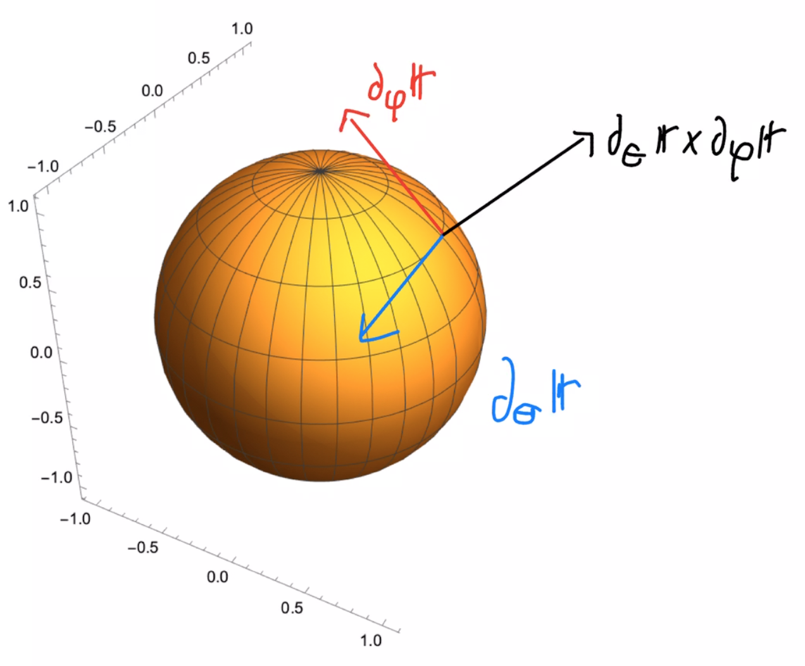
Nota: esta cuenta NO dice que no existan planos tangentes en los polos, mas bien lo que pasa es que la pareametrización dada no garantiza dichos planos tangentes. Sin embargo existen otras parametrizaciones para las cuales el producto cruz es distinto de cero en los polos.
Sea \(\mathbb{r}:\mathcal{R}\to \mathbb{R}^3\) una superficie suave parametrizada y digamos que \(\mathbb{r}\) depende de las variables \((u,v)\in \mathcal{R}\). El producto cruz \[ \partial_u \mathbb{r}\times \partial_v\mathbb{r} \] se conoce como el producto fundamental de la superficie.
Nota.
Las derivadas parciales \(\partial_u \mathbb{r}\) y \(\partial_v\mathbb{r}\), valuadas en un punto \((u_0,v_0)\), pueden verse como vectores tangentes a la superficie en el punto \(\mathbb{r}(u_0,v_0)\). Si además suponemos que \(\{\partial_u \mathbb{r}(u_0,v_0),\partial_v \mathbb{r}(u_0,v_0)\}\) es linealmente independiente resulta que es también una base para el plano tangente en \(\mathbb{r}(u_0,v_0)\). Pero, el producto cruz entre dos vectores en \(\mathbb{R}^3\) es perpendicular a ambos vectores, por lo tanto podemos pensar al producto fundamental \(\partial_u \mathbb{r}\times \partial_v \mathbb{r}\) como un vector normal a la superficie.
Para una parametrización \(\mathbb{r}:\mathcal{R}\to \mathbb{R}^3\), podemos usar de nuevo el producto fundamental para ver cómo \(\mathbb{r}\) transforma el área de \(\mathcal{R}\).
Recordemos que, en general, la norma del producto cruz de dos vectores \(P\) y \(Q\) es igual al área del paralelogramo generado \(P\) y \(Q\). Ahora, fijemos \(\mathbb{r}(u_0,v_0)\) en la superficie. Ya que el plano tangente es el mejor plano que aproxima a la superficie y tomando en cuenta de que \(\{\partial_u \mathbb{r}(u_0,v_0),\partial_v \mathbb{r}(u_0,v_0)\}\) forma una base para dicho espacio, tomando \(P=\partial_u \mathbb{r}(u_0,v_0)\) y \(Q=\partial_u \mathbb{r}(u_0,v_0)\), resulta que \[ \|\partial_u \mathbb{r}(u_0,v_0)\times \partial_v \mathbb{r}(u_0,v_0) \| \] de una medida de qué tanto el área de \(\mathcal{R}\) se deforma para dar el área de la sufercie. Tomando en cuenta esto, tenemos la siguiente definición.
Dada \(\mathcal{S}\), una superficie suave parametrizada por \(\mathbb{r}:\mathcal{R}\to \mathbb{R}^3\), definimos su área superficial como \[ \textrm{Area}(\mathcal{S})=\int_{\mathcal{R}} \left\| \partial_u \mathbb{r}\times \partial_u \mathbb{r} \right\| \]
Encuentra el volumen del sólido que está por debado del paraboloide elíptico \(z=x^2+2y^2\), arriba del plano \(xy\) y adentro del cilindro \(x^2+y^2=2x\).
Hint: primero encuentra la integral que da el volumen después usar un cambio de coordenadas polares para calcularla.
Considera la función \begin{eqnarray*} f(t)=\left\{ \begin{array}{cc} \mu^{-1}e^{-t/\mu} & t \geq 0 \\ 0 & t < 0 \end{array} \right. \end{eqnarray*} donde \(\mu > 0\) es una constante.
Prueba que \(\int_{-\infty}^{\infty}f(t)dt=1\).
Dicho tipo de función se llama una función de densidad tipo exponencial.
Considera la función \begin{eqnarray*} f(t)=\left\{ \begin{array}{cc} c xe^{-x/2} & t \geq 0 \\ 0 & t < 0 \end{array} \right. \end{eqnarray*} donde \(c>0\) es una constante.
Encuentra el valor de \(c\) para la cual \(f\) es una función de densidad, es decir \[ \int_{-\infty}^{\infty}f(t)dt=1\]
Tiempos de espera se pueden modelar con variables aleatorias con función de probabilidad de densidad de la forma \begin{eqnarray*} f(t)=\left\{ \begin{array}{cc} \mu^{-1}e^{-t/\mu} & t \geq 0 \\ 0 & t < 0 \end{array} \right. \end{eqnarray*} donde \(\mu > 0\) es una constante (dicho tipo de función se llama una función de densidad tipo exponencial).
Asume que el tiempo de vida de cierto tipo de focos se pude modelar con una variable aleatoria con densidad tipo exponencial con \(\mu=1000\) (promedio de vida del foco es 1000 horas).
Considera la función \(f:\mathbb{R}^2 \to \mathbb{R}\) dada por \[ f(x,y)=\frac{1}{2\pi} e^{-\frac{x^2+y^2}{2}} \] Prueba que \(\int_{\mathbb{R}^2}f(x,y)dA=1\).
Sugerencia: prueba \(\lim_{n\to \infty}\int_{R_n}f(x,y)dA=1\), donde \(R_n\) es el disco centrado en cero y de radio \(n\).
Supon que \(X,Y\) son variables aleatorias independientes. \(X\) tiene una función de densidad normal con media \(\mu=45\) y desviación estandar \(\sigma=0.5\), \(Y\) tiene una densidad normal con media \(\mu=25\) y desviación estandar\(\sigma=0.3\). Calcula \(\mathbb{P}(30\leq X \leq 50, 20\leq Y \leq 30)\)
Para las siguientes superficies parametrizadas calcula su producto fundamental.
Para las siguientes superficies parametrizadas calcula su producto fundamental.
Supongamos que la superficie \(\mathcal{S}\) es la gráfica de \(f\), una función clase \(C^1\), es decir \[ \mathcal{S}=\{(x,y,z): (x,y)\in \mathcal{R}: z=f(x,y)\} \] donde \(\mathcal{R}\subset \mathbb{R}^2\) es una región y \(f:\mathcal{R}\to \mathbb{R}\) es clase \(C^1\) en \(\mathcal{R}\).
Prueba que \[ \textrm{Area}(S)=\int_{\mathcal{R}} \sqrt{1+ (\partial_x f)^2 + (\partial_y f)^2}dxdy \]
Demuestra que el área del plano, \(z=Ax+By+C\), que está justo por arriba de la región \(\mathcal{D} \subset \mathbb{R}^2\) es \[ \textrm{Area}(\mathcal{D})\sqrt{A^2+B^2+1} \]
Encuentra las áreas superficiales que se indican.